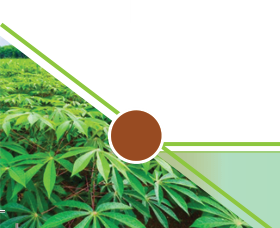

Agriculture for Secondary Schools
weight gain, and restricted feeding, which is done on breeders and egg-producing
flocks to avoid overweight that can hinder performance. In all cases, restricted
feeding is for feed and not water.
Component feeding or total mixed ration can be used to feed ruminants.
Component feeding is when only one component of feed ration (foraging), protein
supplements, and grains are offered to the animal based on weight. In total mixed
ration (tmr), forages, grain and protein by-products (such as sunflower seed cakes
maize bran), minerals, and vitamins are mixed to make a balanced ration in which
the weight of each ingredient is known.
On the other hand, monogastric feeding practices are either wet-dry feeding or
dry feeding. The wet-dry feeding practice uses water to moisten the dry feed to
make it easier for the animal to use. The system reduces feed wastage, improves
feed efficiency, and increases productivity.
Activity 6.3
Visit a school farm and some nearby livestock farms to study feeding systems
and practices on the farm. Then, perform the following tasks:
(a) Observe the characteristic features of the visited premise;
(b) Identify the type of livestock feeds and feeding practices employed in the
farm; and then,
(c) Summarize your observation in your portfolio.
Management of livestock health
For an animal to produce optimally, it must be in good health. Health in livestock
production implies a state of well-being and normal functioning of body organs
and systems. It is freedom from diseases and abnormalities.
Signs of healthy and unhealthy animal
Farm animals need a close follow-up to keep individual animals, flocks, or herds
in good health and performing. When the animal falls sick, it shows some signs/
behavioural deviation from the normal healthy animals.
94
Student’s Book Form Two
